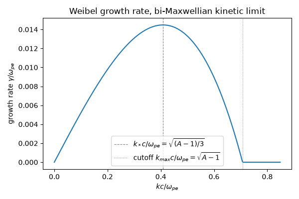
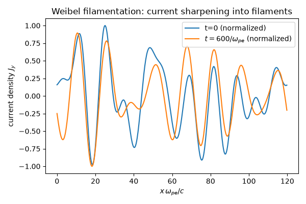
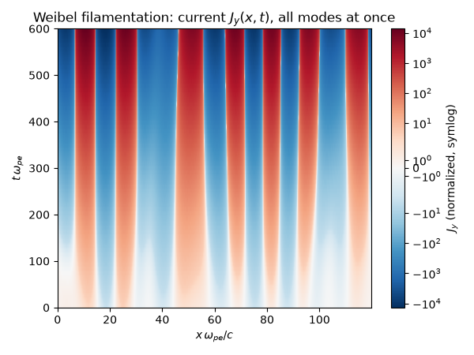
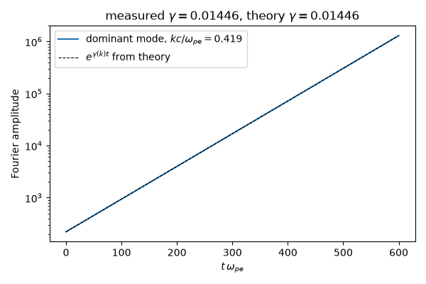

Note
Go to the end to download the full example code.
Weibel filamentation: growing current filaments from temperature anisotropy#
Erich Weibel (1959) found that a plasma whose velocity distribution is anisotropic (\(T_\perp>T_\parallel\), no bulk streaming at all) is unstable to a purely growing transverse electromagnetic mode – no beam, density gradient, or external field required. Burton Fried, the same year, supplied the physical mechanism: a random transverse magnetic fluctuation curves particle orbits enough to bunch them into current channels, and the growing channel current reinforces exactly the fluctuation that curved the orbits into existence – a self-sustaining feedback loop with no threshold.
For a bi-Maxwellian with \(A=T_\perp/T_\parallel\) and a wavevector \(k\) along the cool axis, the small-growth kinetic limit of the Vlasov-Maxwell dispersion relation gives (Davidson 1983)
The rate vanishes at \(k=0\), where a uniform field cannot bunch particles into separate channels; it is largest at \(k_*c/\omega_{pe}=\sqrt{(A-1)/3}\), which sets the filament spacing to a few skin depths; and it cuts off at \(k_{max}=(\omega_{pe}/c)\sqrt{A-1}\), beyond which the field’s own magnetic tension (the \(k^2c^2\) term) overcomes the free energy the anisotropy supplies. The expansion assumes \(\gamma\ll k v_{T\parallel}\), so this example uses a modest anisotropy, \(A=1.5\).
weibel_growth_rate() evaluates
the linear growth rate directly, and
simulate_weibel_filamentation()
superposes a spectrum of independently growing transverse-current
Fourier modes – exact linear theory standing in for a full
2D-in-velocity electromagnetic PIC code – to show the real-space
current filaments forming.
import matplotlib.pyplot as plt
import numpy as np
from matplotlib.colors import SymLogNorm
import physicskit as pk
Growth rate vs. wavenumber#
Units with c = omega_pe = 1, so k is in inverse skin depths. Growth is zero at k = 0, peaks at k_*, and cuts off at k_max.
wpe, aniso, c, v_th = 1.0, 1.5, 1.0, 0.2
k_star, gamma_max = pk.plasma.weibel_fastest_growing_mode(wpe, aniso, c=c, v_th_par=v_th)
k_max = (wpe / c) * np.sqrt(aniso - 1.0)
k_vals = np.linspace(0.0, 1.2 * k_max, 300)
gamma_vals = pk.plasma.weibel_growth_rate(k_vals, wpe=wpe, temperature_anisotropy=aniso, c=c, v_th_par=v_th)
fig, ax = plt.subplots(figsize=(6, 4))
ax.plot(k_vals, gamma_vals)
ax.axvline(k_star, color="gray", linestyle="--", linewidth=0.8, label=r"$k_*c/\omega_{pe}=\sqrt{(A-1)/3}$")
ax.axvline(k_max, color="gray", linestyle=":", linewidth=0.8, label=r"cutoff $k_{max}c/\omega_{pe}=\sqrt{A-1}$")
ax.set_xlabel(r"$kc/\omega_{pe}$")
ax.set_ylabel(r"growth rate $\gamma/\omega_{pe}$")
ax.set_title("Weibel growth rate, bi-Maxwellian kinetic limit")
ax.legend()
fig.tight_layout()
plt.show()

Filament growth from seeded current modes#
A spectrum of transverse-current Fourier modes, each growing at its own linear rate, sharpens from small random noise into current filaments spaced by about 2 pi / k_*, as the modes near the peak overtake the rest.
x = np.linspace(0, 120.0, 512, endpoint=False)
t = np.linspace(0, 600.0, 61)
J = pk.plasma.simulate_weibel_filamentation(x, t, wpe, aniso, n_modes=12, seed=0, c=c, v_th_par=v_th)
fig, ax = plt.subplots(figsize=(6, 4))
ax.plot(x, J[0] / np.abs(J[0]).max(), label="t=0 (normalized)")
ax.plot(x, J[-1] / np.abs(J[-1]).max(), label=rf"$t={t[-1]:.0f}/\omega_{{pe}}$ (normalized)")
ax.set_xlabel(r"$x\,\omega_{pe}/c$")
ax.set_ylabel(r"current density $J_y$")
ax.set_title("Weibel filamentation: current sharpening into filaments")
ax.legend()
fig.tight_layout()
plt.show()

The full space-time picture#
The two snapshots above are just the first and last rows of the same
J array already computed; stacking every row into one image (no
extra simulation needed) shows the modes near k_* overtaking the rest
continuously in real space, rather than only at the two endpoints. A
symmetric-log color scale is needed because the exponential growth
spans many decades between the seeded noise at t=0 and the final time.
fig, ax = plt.subplots(figsize=(6, 4.5))
vmax = np.max(np.abs(J))
norm = SymLogNorm(linthresh=max(np.abs(J[0]).max(), 1e-6), vmin=-vmax, vmax=vmax)
im = ax.imshow(J, origin="lower", aspect="auto", extent=[x[0], x[-1], t[0], t[-1]], cmap="RdBu_r", norm=norm)
fig.colorbar(im, ax=ax, label=r"$J_y$ (normalized, symlog)")
ax.set_xlabel(r"$x\,\omega_{pe}/c$")
ax.set_ylabel(r"$t\,\omega_{pe}$")
ax.set_title("Weibel filamentation: current $J_y(x,t)$, all modes at once")
fig.tight_layout()
plt.show()

Measuring the growth rate of the dominant mode#
The Fourier amplitude of the strongest mode at the final time grows as a straight line on a log scale; its slope is the measured growth rate.
spectrum = np.abs(np.fft.rfft(J, axis=1))
k_fft = 2.0 * np.pi * np.fft.rfftfreq(x.size, d=x[1] - x[0])
i_dom = np.argmax(spectrum[-1])
k_dom = k_fft[i_dom]
gamma_measured = np.polyfit(t, np.log(spectrum[:, i_dom]), 1)[0]
gamma_theory = float(pk.plasma.weibel_growth_rate(k_dom, wpe=wpe, temperature_anisotropy=aniso, c=c, v_th_par=v_th))
fig, ax = plt.subplots(figsize=(6, 4))
ax.semilogy(t, spectrum[:, i_dom], label=rf"dominant mode, $kc/\omega_{{pe}}={k_dom:.3f}$")
ax.semilogy(t, spectrum[0, i_dom] * np.exp(gamma_theory * t), "k--", linewidth=0.8, label=r"$e^{\gamma(k)t}$ from theory")
ax.set_xlabel(r"$t\,\omega_{pe}$")
ax.set_ylabel("Fourier amplitude")
ax.set_title(rf"measured $\gamma={gamma_measured:.5f}$, theory $\gamma={gamma_theory:.5f}$")
ax.legend()
fig.tight_layout()
plt.show()

Animating the filaments forming#
Check#
The growth rate is zero at k = 0, peaks at k_* = (omega_pe / c) sqrt((A - 1) / 3), and vanishes beyond the cutoff k_max = (omega_pe / c) sqrt(A - 1). The dominant mode grows at the rate the function gives, sits near the peak, and has grown by orders of magnitude.
assert gamma_vals[0] == 0.0
assert abs(k_vals[np.argmax(gamma_vals)] - np.sqrt((aniso - 1.0) / 3.0)) < k_vals[1] - k_vals[0]
assert np.all(gamma_vals[(k_vals > 0) & (k_vals < 0.99 * k_max)] > 0) and np.all(gamma_vals[k_vals > k_max] == 0)
assert np.isclose(gamma_measured, gamma_theory, rtol=1e-6)
assert gamma_theory > 0.8 * gamma_max and abs(k_dom - k_star) < 0.3 * k_star
assert np.abs(J[-1]).max() > 1e3 * np.abs(J[0]).max()
Total running time of the script: (0 minutes 14.859 seconds)